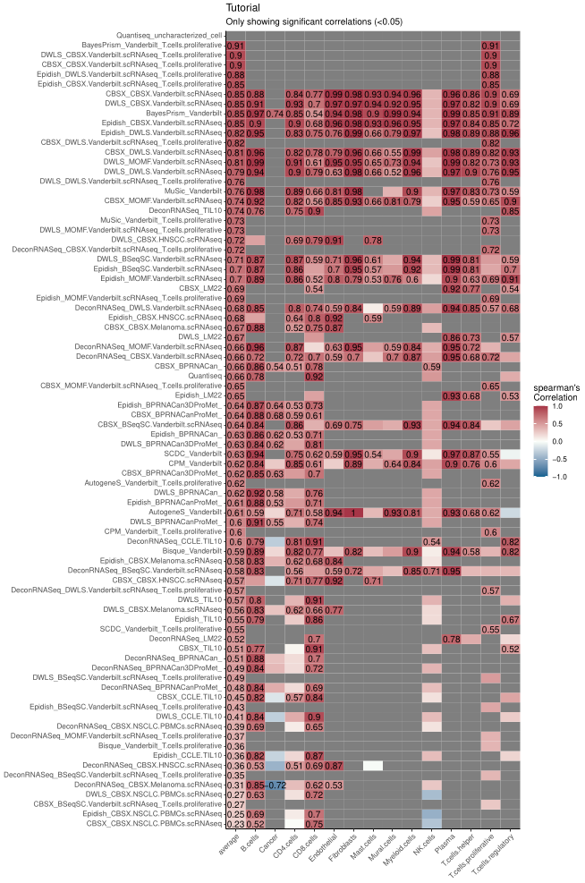

library(multideconv)
metacell_obj = multideconv::metacells_data
metacell_metadata = multideconv::metacells_metadataPseudo-bulk profiles
To create pseudo-bulk profiles from the original single-cell objects, simulating a bulk RNA-seq dataset, you can use the following function:
NOTE: You can input either your original single-cell object or the metacell object. Just be sure to select the same object when examining the real cell proportions (if needed).
metacells_seurat = Seurat::CreateSeuratObject(metacell_obj, meta.data = metacell_metadata)
#> Warning: Data is of class matrix. Coercing to dgCMatrix.
pseudobulk = create_sc_pseudobulk(metacells_seurat, cells_labels = "annotated_ct", sample_labels = "sample", normalized = TRUE, file_name = "Tutorial")
#> Warning: Layer 'data' is empty
#> Warning: Layer 'scale.data' is empty
#> Aggregating assay 'counts' using 'rowMeans2'.
#> Converting input to matrix.Creating cell type signatures
To create cell type signatures, multideconv uses four
methods: CIBERSORTx, DWLS, MOMF,
and BSeq-SC. You must provide single-cell data as input.
Signatures are saved in the Results/custom_signatures
directory, and returned as a list. From now and after
compute.deconvolution() will use these signatures
additionally to the default ones! So if you would like to have the
deconvolution results based on your new files, make sure to run
compute.deconvolution()
To run BSeq-SC, supply the cell_markers
argument, which should contain the differential markers for each cell
type (these can be obtained using FindMarkers() or
FindAllMarkers() from Seurat).
bulk_pseudo = multideconv::pseudobulk
signatures = create_sc_signatures(metacell_obj,
metacell_metadata,
cells_labels = "annotated_ct",
sample_labels = "sample",
bulk_rna = bulk_pseudo,
cell_markers = NULL,
name_signature = "Test",
methods_sig = c("DWLS", "CIBERSORTx", "MOMF", "BSeqsc"))Cell types signatures benchmark
To validate the generated signatures, we provide a benchmarking
function to compare deconvolution outputs against known cell proportions
(e.g., from single-cell or imaging data). The cells_extra
argument should include any non-standard cell types present in your
ground truth. Make sure cell names match those in the deconvolution
matrix (e.g., use B.cells instead of B cells if that is the naming
convention used - see README for more information).
deconv_pseudo = multideconv::deconvolution
cells_groundtruth = multideconv::cells_groundtruth
benchmark = compute.benchmark(deconv_pseudo,
cells_groundtruth,
cells_extra = c("Mural.cells", "Myeloid.cells"),
corr_type = "spearman",
scatter = FALSE,
plot = TRUE,
pval = 0.05,
file_name = "Tutorial",
width = 10,
height = 15)
#> No id variables; using all as measure variables
#> No id variables; using all as measure variables
Figure 1. Example of performance of different methods and signature combinations on the pseudo bulk.